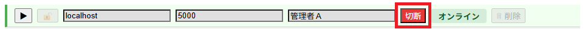
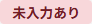
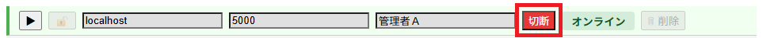
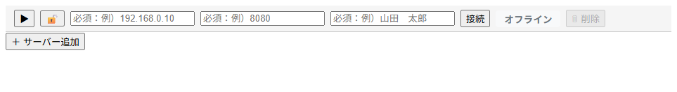
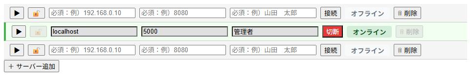

【アコーディオン UI】
はじめに
アコーディオン形式により、各サーバーの状態を個別に展開・操作できる一方、一覧表示で閲覧する事も可能にしています。
ここではGUIの接続フォーム（アコーディオンヘッダ）に焦点を当てて解説します。
ヘッダ構造と役割
アコーディオンの開閉
各サーバーエントリには「トグルボタン」があり、クリックすることでアコーディオンが開閉します。開いた状態では以下の情報が表示されます。
- CPU・メモリ・ディスクのリソース状況
- サービス管理フォーム（起動／停止など）
- ランチャーログ一覧
- チャットフォーム（管理者同士のやり取り）
アコーディオンが開いた状態
全て閉じた状態で一覧表示
接続フォームの各入力項目
アコーディオンヘッダには、サーバー接続に必要な入力フォームを集約しています。
以下に各項目の役割と動作を解説します。
以下に各項目の役割と動作を解説します。
トグルボタン
アコーディオンの開閉を制御します。開くと詳細情報が表示され、閉じると一覧表示に戻ります。鍵ボタン
通信方式の切り替えを行います。クリックするたびに以下の状態が切り替わります。- 鍵が開いた状態：WS通信（非TLS）
- 鍵が閉じた状態：WSS通信（TLS）
ホスト名／ポート番号
接続先のGUIランチャーのホスト名とポート番号を指定します。WebSocket通信のエンドポイント構成に使用されます。オペレータ名
ログ表示やチャット機能で識別に使用される名前です。複数管理者がいる場合は、識別性の高い名前を推奨します。接続／切断ボタン
WebSocket通信の開始／終了を制御します。ボタン押下時には以下のようなステータス遷移が発生します。- 接続時：オフライン → 接続中 → 準備中 → オンライン
- 切断時：オンライン → 切断中 → オフライン
ステータス表示
現在の接続状態を視覚的に表示します。通信状態の変化をリアルタイムで把握できます。削除ボタン
サーバーエントリを削除します。ただし以下の制限があります。- 最後の1つは削除不可
- オフライン状態でのみ削除可能
サーバー追加ボタン
画面最下部に配置されており、新たなアコーディオンエントリを追加します。複数サーバーの同時管理が可能になります。操作の流れと注意点
GUIランチャーの接続フォームは、シンプルながらも状態管理を明確に設計しています。
ここでは、接続〜切断までの操作フローと、運用上の注意点を解説します。
2. ホスト名／ポート番号／オペレータ名を入力
※ ランチャーのデフォルト値はホスト名"localhost"、ポート番号"5000"に設定されています。
3. 接続ボタンを押下
4. ステータスが以下の順で遷移

2. ステータスが以下の順で遷移
ここでは、接続〜切断までの操作フローと、運用上の注意点を解説します。
接続の流れ
1. 鍵ボタンで通信方式（ws/wss）を選択
⇔
※ ボタンを押すたびに切り替わります。2. ホスト名／ポート番号／オペレータ名を入力
※ ランチャーのデフォルト値はホスト名"localhost"、ポート番号"5000"に設定されています。
3. 接続ボタンを押下
4. ステータスが以下の順で遷移
- ・オフライン → 接続中 → 準備中 → オンライン
-
⇒ ⇒ ⇒
このステータス遷移により、接続処理の進行状況が明確に把握できます。
※ 「準備中」のステータスは、接続時に取得する過去のランチャーログ（最大100件まで）取込完了までの期間なので、件数が多いと時間がかかる事もあります。
- ・接続失敗時
-
アドレスやポート番号を間違っていたり、他者のオペレータ名と重複している場合。
- ・未入力項目がある時
-

ホスト名／ポート番号／オペレータ名のうち一つでも未入力項目がある場合。
切断の流れ
1. 切断ボタンを押下
2. ステータスが以下の順で遷移
- ・オンライン → 切断中 → オフライン
-
⇒ ⇒
注意点
- パブリック環境ではWSS通信での利用を推奨します
-
削除ボタンの制限
-
＜最後の1エントリは削除不可＞

-
＜オフライン状態でのみ削除可能＞

-
- オペレータ名はログに残るため識別性のある名称を推奨します
おわりに
GUIランチャーはデフォルトで5000番ポートを使用します。
操作途中でGUIランチャーが意図せず終了した場合、子プロセスがポートFDを保持している可能性があります。
この場合、GUIランチャーの再起動時にポート競合が発生することがあります。
対処方法：
操作途中でGUIランチャーが意図せず終了した場合、子プロセスがポートFDを保持している可能性があります。
この場合、GUIランチャーの再起動時にポート競合が発生することがあります。
対処方法：
- 子プロセスを停止することで、ポートの解放が行われ、GUIランチャーは正常に再起動可能です。
- 緊急時はCLIランチャーをご利用ください（CLIランチャーはポートを使用しません）。